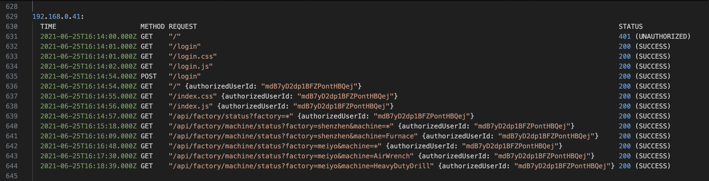
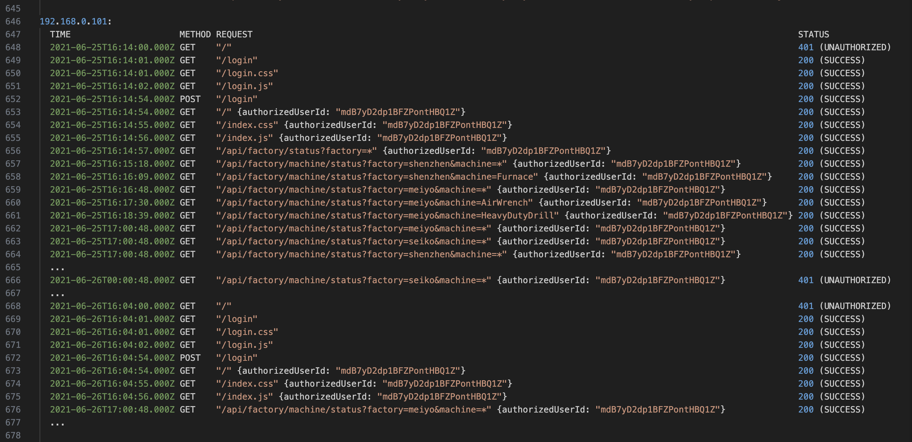

Log Analysis: Tracing Suspicious Internal Behaviour
Introduction
As part of Deloitte Australia’s Cybersecurity Virtual Experience Program on Forage, I investigated a suspected breach affecting a manufacturing client, Daikibo Industrials. The breach appeared to involve unauthorized access to an internal status board, with concerns that sensitive data may have been leaked. My objective was twofold: first, to determine whether the incident could have originated from the public internet without VPN access; and second, to identify any suspicious patterns in the company’s internal web activity logs. In the process, I strengthened my ability to read structured logs, trace user behavior, and distinguish normal usage from automated threats.
Download web_requests.log to follow along
Step-by-Step: Investigative Approach and Key Considerations
Step 1: Understand the Architecture and Constraints
Before jumping into the logs, I clarified key assumptions based on the scenario and infrastructure:
- The telemetry dashboard is hosted on Daikibo’s intranet, which implies that access requires either being on the internal network or connected via VPN.
- The
web_requests.logfile only contains requests from internal, static IP addresses.
This ruled out direct external access (i.e., from the public internet) because attackers would need to breach the VPN or have an internal foothold.
Verifying Internal IPs
To confirm that the IP addresses in the logs were internal, I cross-checked them against private IP address ranges defined by RFC 1918:
- 10.0.0.0 – 10.255.255.255 (10/8 prefix)
- 172.16.0.0 – 172.31.255.255 (172.16/12 prefix)
- 192.168.0.0 – 192.168.255.255 (192.168/16 prefix)
The log entries all used IPs in the 192.168.x.y range, confirming that the traffic originated entirely from within a private network. No public or hybrid IPs were present.
Implication: External Breach Without VPN Is Unlikely
An attacker would need to:
- Compromise valid VPN credentials, and successfully connect through Daikibo's VPN infrastructure
- Gain control of a device already inside the internal network (e.g., through malware, phishing, or physical access)
Simply having stolen user credentials would not be sufficient unless the attacker could also access the VPN or internal network. This emphasizes the importance of layered security: network segmentation, access controls, and VPN authentication are all essential barriers.
Could a Brute-Force Attack Succeed?
- The scenario doesn’t provide enough information to fully assess the system’s protections against brute-force attempts, but such an attack appears unlikely given the context:
- There’s no indication that authentication services are exposed to the public internet.
- If login functionality is behind the VPN or network firewall, brute-force attempts from the outside are not feasible.
- Additionally, many enterprise-grade systems employ brute-force mitigation techniques such as account lockouts, captchas, rate-limiting, and MFA.
Step 2: Inspect IP Behavior and Request Patterns
Note: In real-world environments, web logs are rarely this clean. Production logs are often noisy, inconsistent, and include additional metadata (e.g., user-agent strings, headers, timestamps in different formats). They usually require parsing tools or log management platforms for effective analysis. This exercise simplifies the format for learning purposes.
Next, I reviewed the web_requests.log to assess behavior patterns. Specifically, I wanted to determine:
- Was the login sequence normal? (GET /login → assets → POST /login)
- Was dashboard activity followed by expected resource requests? (.css, .js, images)
- Were API requests being made manually or programmatically? Or in other words, does the request sequence match expected human behavior?
Normal Activity Example
This request pattern aligns with a legitimate, human-driven session. It was limited in time, used expected endpoints in the correct order, and showed no signs of automation or abuse.
You can see that the user had:
- Initial 401 when accessing – expected for an unauthenticated user session.
- Accesses login page assets (/login, /login.css, /login.js).
- Performs a POST /login; receives 200 OK.
- Begins authenticated session
- Accesses various factory/machine endpoints manually over a few minutes.
- Activity stops soon after initial interactions
Summary: This request pattern aligns with a legitimate, human-driven session (i.e., likely a user manually interacting via UI). It was limited in time, used expected endpoints in the correct order, and showed no signs of automation or abuse.
Suspicious Example: 192.168.0.101
This IP request block showed suspicious activity, consistent with that of a scripted client or bot.
Download the full log for details
- After authenticating, began polling the /api/factory/machine/status endpoint once per hour, precisely at HH:00:48.000Z.
- Used wildcard query parameters (e.g., factory=*) to request data from all factories.
- Continued sending API requests even after receiving repeated 401 Unauthorized responses.
- Showed no evidence of reloading dashboard assets, indicating API access via HTTP clients (curl, wget, cron).
Red Flags:
- Automated polling behavior – consistent hourly timestamps.
- Unauthorized access attempts continuing after failure.
- Wildcard usage in parameters.
- No frontend asset loading, suggesting backend scraping or automation.
Step 3: Identify Access Risk / Conclusion
- No evidence of a direct external attack occurred.
- No VPN bypass or brute-force login attempts were visible.
- Suspicious activity from 192.168.0.101 suggested use of automated tools or scripts.
- User ID involved in the suspicious activity:
mdB7yD2dp1BFZPontHBQ1Z.
Security Takeaways
- Pattern-based detection is essential. Human vs. automated behavior can be teased out through request timelines and structure.
- APIs must be hardened: invalidate expired tokens, enforce rate limits, monitor anomalies.
- Manual inspection adds context; automation scales detection.
- Audit trails matter: logs reconstruct the who, what, when, and how.
- Strong observability underpins effective incident response.
Broader Implications: Why This Matters in Real Environments
- Most breaches begin inside the network, via credential misuse or internal vulnerabilities.
- Misconfigured internal tools or over-permissive automation can be silently exploited.
- Automation is not abuse, but patterns reveal intent.
- Lingering sessions or poorly handled tokens are frequent attack vectors.
Security Architecture Principles Highlighted
- Defense-in-depth: Multiple layers (VPNs, firewalls, token expiry) mitigate damage.
- Zero Trust: Internal =/= safe. Enforce authentication and anomaly detection at all layers.
- Secure-by-default: Don’t expose internal tools unnecessarily. Always require strong auth.
- Network monitoring: Static IPs and segmentation make it easier to spot anomalies.
For further reading: